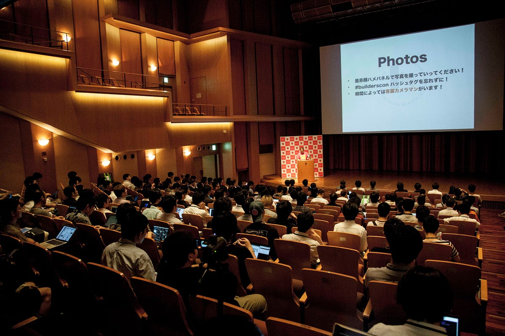

カンファレンスカメラマンを発注する
カンファレンスカメラマンを発注する
このエントリはカンファレンスカメラマンAdvent Calendar 2017の12/11分となります。

自分は多分日本の技術コミュニティベースのイベント主催者で初めて「プロのカメラマンを雇う」ということを実践・公言してきた人だと思います（自分の前にもいたけど観測できてない可能性はある）。
幸い2009年にこの試みを始めた時紹介してもらったカメラマンの方が最高な方だったのでその後もずっと続いています。以下去年のbuilderscon tokyo 2017紹介記事（英語）、公式写真セット、そしてカメラマンの八木さんについての2013年のエントリです。
We successfully hosted builderscon tokyo 2017, in the lovely Kyoseikan building on Keio University.medium.com
YAPC::Asia Tokyo 2013が終わった。何個かエントリを書こうと思うが、とりあえずまずこの話から。YAPC::Asia Tokyo 2009から主催者の立場にいるのだが、2009年に自分があちこちのスポンサーまわりをしたと…lestrrat.ldblog.jp
プロのカメラマンを雇っている時は雇用関係が発生している事もあって、こちらもズバズバ意見を言いやすいし、向こうも仕事なので場数を踏んでいる分だけこちらの意図を先回りしてくんでくれるので特に問題が発生したことはないのですが、もし自分が新たにカンファレンスカメラマンを頼む場合に発注側として気にしそうな事を書いてみたいと思います。
「頼む、これは撮ってくれ」
自分がカメラマンを発注する理由は会の雰囲気を伝える資料が欲しいからです。ですので正直に言うと発注する際は一言「雰囲気がわかる写真を…」とだけ発注したいところですが、それだ足りない写真がでてくるでしょう。
全体の雰囲気がわかる写真、というのはなんとなくわかってもらえると思いますが、それ以外に具体的に欲しい写真には以下のようなものがあります：
- 各スピーカーの顔、左右からのパターン
- スポンサーロゴの入っているもの全て
- 参加者、スタッフの笑顔。なるたけ多くの人
笑顔は言わずもがなでしょう。だけど、なるたけ多くの人の笑顔を入れたい、というのは伝えるべき事だと思います。
スポンサーロゴはなるたけ目立つように運営側も気をつけているけれども、これが記録に残るというのが大事です。そうでないと次回からのスポンサーへの説明が楽にならないのです。
スピーカーの顔は意外と難しい問題です。左右のパターンが欲しいのは、あとでブログ等の媒体等に写真を掲載する際に、数人の顔を並べた際に全員同じ向いているとおかしい具合になったり、その人の写りが左右で差があったりと色々あるため、できれば何個かパターンが欲しいのです。問題となるのはパターンを撮るための撮影位置を確保しないといけない他、カメラマンがどうにもできない「スピーカーが自分のPCから目を離してくれない」「一切カメラマンに目線をくれない」等の問題があります。これらは運営側がある程度がんばらないといけないところですが、それを知らない人もたくさんいるので初めてカンファレンスカメラマンをしたり、発注したりする場合は注意したほうが良いと感じます。
「頼む、これは撮らないでくれ」
逆に、撮って欲しくないものがある。端的に言うと「裏方」を撮って欲しくないのです。以下具体例：
- バックパネルの裏の骨組み
- 演壇の後ろ
例えばスピーカーを横から撮る場合は、バックパネルの正面側だけがギリギリ見えるところでどうにかしてほしいのです。骨組みの事はそれをちゃんと見たことがある型は皆知ってるかもしれないですが、それでも絵には残しておく必要はないと思います。
たまに後ろからスピーカーを撮影される時があるのですが、上記と同様に演壇の裏はPCの配線等もあるので極力避けて欲しいのです。
今後のカンファレンスカメラマン
最後にこれまで10年近くカンファレンスカメラマンを雇ってきて、今後こうしたいなぁ〜できたらいいなぁ〜というのを書いてみます。
基本カメラマンにお願いする写真は修正等も含め、1日〜数日のタイムラグがあってあがってくるものです。当然クォリティコントロールの問題もあるでしょうし、これはこれでいいのですが、それとは別にもう少しリアルタイムに近い形で会場の雰囲気を追っていくことができる形でのカメラマンが欲しいと考えています。
昨年開催した builderscon tokyo 2017 では実験的な試みとして TAKA_0411 氏に「インスタグラマー」の役目をお願いしてみました。
46 Followers, 0 Following, 123 Posts - See Instagram photos and videos from @builderscon.iowww.instagram.com
builderscon tokyo 2018 | Sep 6-8, 2018 / at Kyouseikan, Keio University. | 知らなかった、を聞く - buildersconは技術を愛する全てのギーク達のお祭りで…2018.tokyo.builderscon.io
撮っていただいた写真はどれもよかったのですが、写真を撮る際にスマホを使っている事で来場者に警戒されたり、単純にインスタグラムとの連携でちょこちょこ問題があったり、そして最終的に（多分）一人で全体のリアルタイムカバーというのは無理があって、「量」の面で課題が残るなぁ、と個人的には感じました。
この辺りの事も含め、ニア・リアルタイムで会場の雰囲気を伝えるという仕組みが何かできるとよいなぁ、というのを今後の課題としてなんとなく考えています。良いアイデアがあったら是非聞きたい！